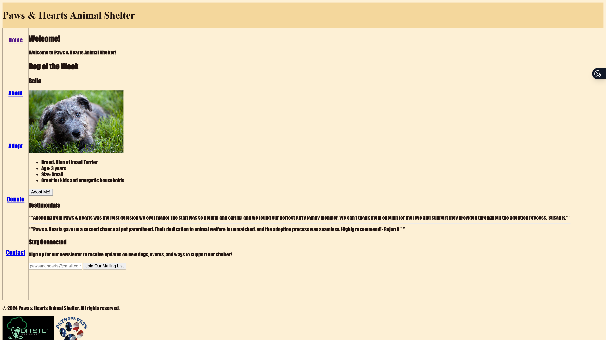

Peer Review 1
Wyatt, Alex

Evaluation
- Valid HTML: Pages appear to load without major structural errors, but a missing
<h1>was flagged by the WCAG checker — the site header should use an<h1>element for proper document outline. - Accessibility (WCAG): The WCAG checker returned errors: a missing form label and a missing
<h1>. These should be addressed — add<label>elements for any form inputs and ensure an<h1>exists on each page. - Color / Contrast: All fonts appear to be black, which makes text difficult to read against certain backgrounds. This looks like a default font-color issue — consider adding explicit color styling with sufficient contrast ratios.
- Typography: The font chosen is pretty hard to read. Another font would significantly improve the visual quality and readability of the site.
- Layout / Spacing: The
<main>element is missing a left margin — addingmargin-left: 8px(the browser default) would bring it in line with expected spacing. - Navigation: The sidebar links are spaced extremely far apart. I'd recommend consolidating these into a top navigation bar with consistent spacing, which would be both more usable and more visually polished.
- Homepage: Generally looks good — content is present and the layout works once the nav spacing is addressed.
- About Page: Looks fine — basic content is present and readable.
- Adopt Page: The text alignment looks off — it appears centering may have been done using spaces or
rather thantext-align: center;in CSS. Use CSS for all alignment. - Donate Page: Content looks good. The font size inside input groups should be differentiated from the label/title text — currently they are the same size and weight, making it hard to distinguish fields from headings.
- Contact Page: Looks good overall. Same input group font-size suggestion applies here as with the Donate page.
- Overall: Good start — the structure and content are there. Focus on CSS polish, accessibility fixes, and consistent font/color choices to bring it to the next level. Keep going!
Steiger, Ian — April 19, 2026
I have emailed the link to this review to Alex Wyatt.